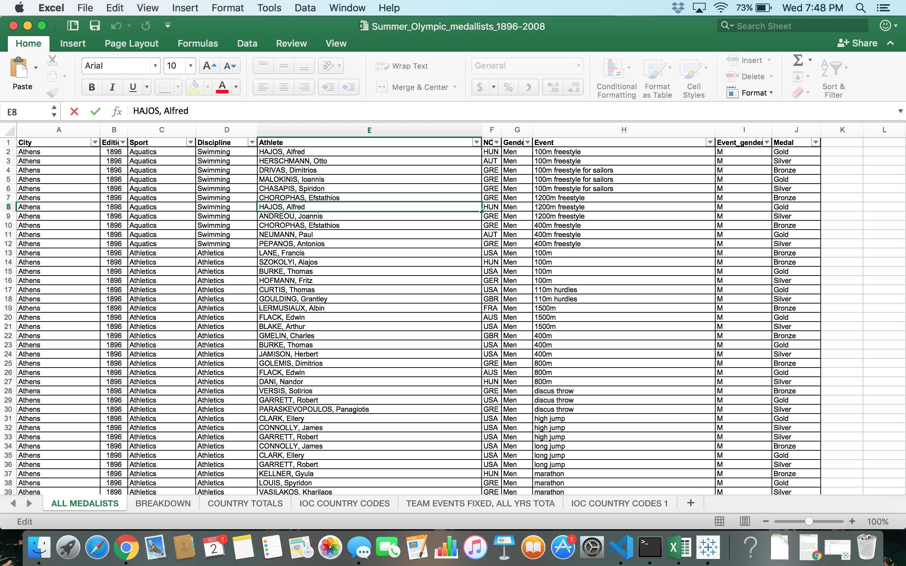

1896-2008 Summer Olympic Data

Reflection on Exploratory and Explanatory Analysis
 Summer Olympic DatasetAfter looking at different public data sets I decided to choose the data set with data on the summer Olympic medalists from 1896-2008. I love watching the summer Olympics which is why I chose this data set. There was plenty of information regarding participating countries, host cities, events, medal counts and athletes which was more than enough to discover some insightful information. This dataset was also very clean so preprocessing was not needed.
During the exploration stage I started off with numerous questions to ask. Because of the amount of data in the spreadsheet I decided to write down some generic questions. I started off with basic questions all along the lines of who won the most medals in a certain year, or which countries have won the most medals. During this stage I realized that all of the data were strings, so I needed to convert some variables to integers. The visualizations created from these questions were informative, however they weren’t necessarily connected and didn’t give much insight into the data. I didn’t feel like I found any useful patterns, so I iterated through this process again with a clearer goal in mind. I made new worksheets analyzing the gender dynamics of the Summer Olympic data.
After I had these worksheets I edited them to clearly communicate what I wanted to say. I added annotations and titles to draw the reader’s attention to the most important trends or data points in the data. I chose the most effective visualization to convey the information. I then rearranged the sheets I had into an order that made sense for the reader to understand the gender dynamics. I put these visualizations into a story board so that in a somewhat “chronological order”. The reader can click through the story to gain additional insight on the visualization they just saw. Since the data I was portraying was related to the different years the summer Olympics were held, it made sense to go in an order in which patterns throughout the years were the main focus.